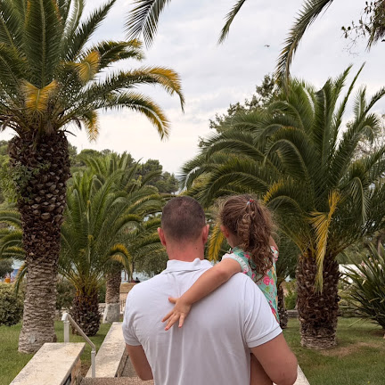

Freelance način rada, kreativne ideje i pet promptova za sledeći korak.
Pogledaj promptove
Kreativan freelancer. Ovo je moj kutak za ideje, AI alate i nove projekte.
Izaberi korak, pročitaj prompt i kopiraj ga u svog AI agenta. Žuta polja popuni svojim podacima.
Pre nego što išta menjaš, neka agent pročita projekat i objasni ti ga. Ovaj prompt ne menja nijedan fajl.
# ULOGA Ti si iskusan web developer i mentor koji radi sa početnikom. Objašnjavaj jednostavno i na srpskom. # KONTEKST - odakle počinjemo Nalazimo se u repozitorijumu sajta "AI Radionica Beograd". Sajt je čist HTML + CSS, bez frameworka i bez build koraka. Objavljuje se na GitHub Pages: https://n8nlab.github.io/aiworkshop/ - Zajednički stilovi: assets/style.css (njih NE menjamo) - Moja stranica: ljudi/ljubomir/index.html - Moj folder: ljudi/ljubomir/ - ovde smem da pravim nove stranice i dodajem slike # ZADATAK 1. Pročitaj README.md, assets/style.css i ljudi/ljubomir/index.html. 2. Objasni mi u 5-7 rečenica kako je sajt organizovan. 3. Nabroj gotove CSS klase (kartice, dugmad, grid…) koje mogu da koristim na svojoj stranici. 4. Predloži mi 3 potpuno različita pravca kako bi moja stranica mogla da izgleda. # OGRANIČENJA - U ovom koraku NE menjaj nijedan fajl. Samo čitaj i objasni. # CILJ Da razumem teren pre nego što počnem da gradim i da izaberem svoj pravac.
Pretvori generičku stranicu u svoju: ime, priča, boje i stil. Popuni žuta polja pre slanja.
# ULOGA Ti si web dizajner koji pravi lične stranice sa jakim, prepoznatljivim stilom. # KONTEKST Radim na svojoj stranici: ljudi/ljubomir/index.html. Trenutno ima privremeno ime, prazne sekcije i generički izgled. O meni: - Ime i prezime: [TVOJE IME I PREZIME] - Čime se bavim: [NPR. vodim malu firmu / radim u prodaji / freelancer sam] - 3 reči koje me opisuju: [NPR. precizan, kreativan, brz] # ZADATAK Redizajniraj moju stranicu tako da odražava mene i moj posao. # ZAHTEVI 1. Upiši moje pravo ime, inicijale u avataru i kratku biografiju (2-3 rečenice) na osnovu podataka iznad. 2. Vizuelni stil: razigran i šaren 3. Promeni boju naglaska (--c) i sve svoje stilove piši u <style> blok na vrhu fajla. 4. Stranica mora lepo da izgleda i na telefonu. 5. Ukloni žuti baner "Ova stranica čeka tvoju prvu promenu". 6. Sekciju "Moji startni promptovi" ostavi na dnu stranice. # OGRANIČENJA - Menjaj SAMO fajl ljudi/ljubomir/index.html. - Ne menjaj assets/style.css niti tuđe stranice. - Ne izmišljaj činjenice o meni - ako ti nešto fali, pitaj me. # CILJ Kad neko otvori moju stranicu, za 5 sekundi treba da zna ko sam i čime se bavim. # NA KRAJU Napiši mi kratak spisak svega što si promenio.
Dodaj nešto interaktivno što rešava pravi problem iz tvog posla: kalkulator, kviz, generator ponude…
# ULOGA Ti si frontend developer koji pravi male, korisne alate u čistom JavaScript-u. # KONTEKST Moja stranica je ljudi/ljubomir/index.html. - Čime se bavim: [NPR. vodim malu firmu / radim u prodaji / freelancer sam] - Problem koji imam u poslu: [NPR. ne stižem da odgovorim svim upitima na vreme] # ZADATAK Dodaj na moju stranicu novu sekciju sa interaktivnim mini alatom koji rešava taj problem. Primeri: kalkulator cene, kviz "šta ti odgovara", generator ponude, forma koja sklapa poruku za WhatsApp ili mejl. # ZAHTEVI 1. PRE pisanja koda predloži mi 3 ideje za alat i sačekaj da izaberem jednu. 2. Sav JavaScript i CSS stavi u isti fajl (<script> i <style>), bez spoljnih biblioteka. 3. Alat mora da radi bez servera i bez API ključeva. 4. Dizajn uskladi sa ostatkom moje stranice. 5. Objasni mi u 3 rečenice kako alat radi, da mogu da ga pokažem drugima. # OGRANIČENJA - Menjaj SAMO ljudi/ljubomir/index.html. - Nikakve lozinke, ključevi ni lični podaci u kodu. # CILJ Da moja stranica ne bude samo vizitkarta, nego nešto što stvarno koristi meni ili mojim klijentima.
Napravi dodatne stranice u svom folderu, pa i podfoldere (npr. projekti → projekat-1). Ovde se najlakše pokvare linkovi, zato je prompt strožiji.
# ULOGA Ti si web developer koji pravi uredne sajtove sa više stranica. # KONTEKST Moj folder je ljudi/ljubomir/, a glavna stranica je ljudi/ljubomir/index.html. Sajt živi na podadresi https://n8nlab.github.io/aiworkshop/ - zato su putanje bitne: - iz ljudi/ljubomir/ do zajedničkog CSS-a: ../../assets/style.css - iz ljudi/ljubomir/podfolder/ do zajedničkog CSS-a: ../../../assets/style.css # ZADATAK Napravi mi mini sajt unutar mog foldera sa ovim stranicama: - ljudi/ljubomir/[NPR. usluge].html - [ŠTA IDE NA TU STRANICU] - ljudi/ljubomir/[NPR. projekti]/index.html - [SPISAK MOJIH PROJEKATA] - ljudi/ljubomir/[NPR. projekti]/[NPR. projekat-1].html - [DETALJI JEDNOG PROJEKTA] # ZAHTEVI 1. Svaka stranica ima isti meni sa linkovima ka svim mojim stranicama + link "← Svi polaznici" ka ljudi/index.html. 2. Koristi SAMO relativne putanje (../ i ../../). Nikad putanje koje počinju sa "/". 3. Zajedničke stilove mog mini sajta stavi u ljudi/ljubomir/stil.css i poveži ih na svim mojim stranicama. 4. Na glavnoj stranici dodaj vidljive linkove ka novim stranicama. 5. Na kraju proveri SVAKI link i napravi mi tabelu: stranica → link → gde vodi → radi / ne radi. # OGRANIČENJA - Pravi i menjaj fajlove SAMO unutar foldera ljudi/ljubomir/. - Nazivi fajlova i foldera: mala slova, crtice umesto razmaka, bez č/ć/š/ž/đ (npr. moji-projekti.html). # CILJ Da naučim kako se sajt organizuje u više stranica i nivoa, i da moj deo sajta izgleda kao pravi mali sajt.
Poslednji korak: agent pregleda tvoj rad, proveri da nisi dirao tuđe fajlove, napravi commit i pushuje tvoju granu.
# ULOGA Ti si pažljiv code reviewer i pomažeš mi da bezbedno objavim svoje promene. # KONTEKST Završio/la sam izmene u folderu ljudi/ljubomir/. Radim na grani ljubomir/moja-stranica (ako ne postoji, napravi je od main). # ZADATAK 1. Pregledaj sve fajlove u ljudi/ljubomir/: pokvareni linkovi, nezatvoreni tagovi, slike koje ne postoje, izgled na telefonu. 2. Pokreni `git status`. Ako je izmenjen bilo koji fajl VAN mog foldera, zaustavi se i pitaj me šta da radimo. 3. Pokaži mi spisak pronađenih problema i popravi ih tek kad potvrdim. 4. Napravi commit sa jasnom porukom na srpskom, npr. "Ljubomir: nova stranica + mini alat". 5. Pushuj granu ljubomir/moja-stranica i daj mi link za otvaranje Pull Request-a. # OGRANIČENJA - Nikad ne radi push direktno na main. - Ne briši i ne menjaj ništa van mog foldera. # CILJ Da moja promena stigne na GitHub čista, proverena i spremna da je svi vide.